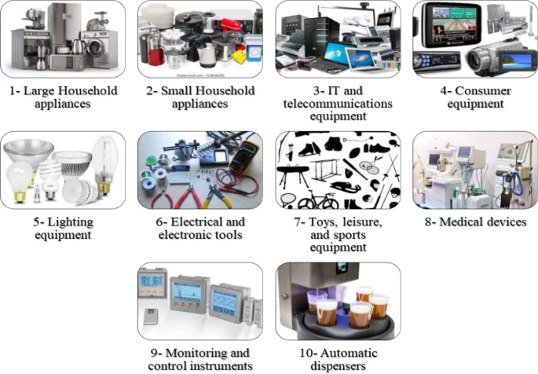

The electronics and telecommunication industries have experienced significant advancements and developments over the past years. Electronics play a crucial role in various sectors, including health care, transportation, communication, security, and entertainment. However, as technology becomes outdated, most consumers tend to discard their old phones and other electronic devices by throwing them away or storing them, thereby contributing to the growing issue of electronic waste (e-waste). This practice leads to valuable materials being wasted and left to degrade in landfills or drawers, hindering progress towards a circular economy that is essential for addressing the environmental crisis we face.
E-waste represents a burgeoning industry, with an average annual growth rate of 2 million metric tons (MT), projected to reach 82 MT by 2030. This increase is primarily driven by rapid technological advancements and the continuous introduction of new devices with the latest features, tempting consumers to dispose of older models and this escalating e-waste levels. E-waste is currently the fastest-growing global waste stream in terms of quantity. This surge in e-waste has significant environmental repercussions, affecting the soil, water, and air.
The main reasons for this dramatic rise in e-waste include the introduction of complex electronics into consumers and the lack of proper education on how to dispose of outdated technology. The explosive growth of the tech industry over the past two decades has contributed to the problem. Reports indicate that less than 20% of the population properly disposes of old devices, while personal investigations suggest that approximately 70% of people are unaware of how to dispose of them correctly.
Improperly disposed e-waste often ends up in landfills or is shipped to developing countries, where informal recycling practices are employed. These practices, such as manual sorting, disassembly, and open burning of e-waste, release heavy metals and toxic substances into the environment, including lead, nickel, antimony, mercury, cobalt, thallium, cadmium, beryllium, polyvinyl chloride (PVC), and brominated flame retardants. These pollutants pose serious health and environmental risks.
On the other hand, e-waste is also a valuable source of rare earth metals such as silver, gold, copper, and palladium. Recycling these materials from e-waste provides a more sustainable and cost-effective method of recovering them compared to traditional mining processes. Moreover, it is more energy-efficient and reduces the need for raw material extraction, thereby mitigating some of the environmental damage associated with mining activities.
On the other hand, e-waste is also a valuable source of rare earth metals such as silver, gold, copper, and palladium. Recycling these materials from e-waste provides a more sustainable and cost-effective method of recovering them compared to traditional mining processes. Moreover, it is more energy-efficient and reduces the need for raw material extraction, thereby mitigating some of the environmental damage associated with mining.
Energy plays a role in both the problems and opportunities associated with e-waste. Fossil fuels are the primary source of energy production worldwide, with the U.S. Energy Information Administration reporting that fossil fuels account for 79% of U.S. energy production. The current consumption of fossil fuels is excessive, posing a threat to our environment and risking the depletion of petroleum and natural gas resources within 35-70 years. This timeline assumes we do not destroy the environment, and ourselves, by emitting vast amounts of greenhouse gasses into the atmosphere.
the transition from fossil fuels to renewable energy can be added through the recycling of e-waste. By recovering valuable materials from e-waste, we can build the necessary infrastructure for a world powered by renewable energy. Certain metals found in e-waste, such as copper, gold, and silver, are excellent catalytic metals for various energy conversion methods and storage applications, including oxygen evolution reactions, hydrogen evolution reactions, and carbon dioxide reduction reactions.
